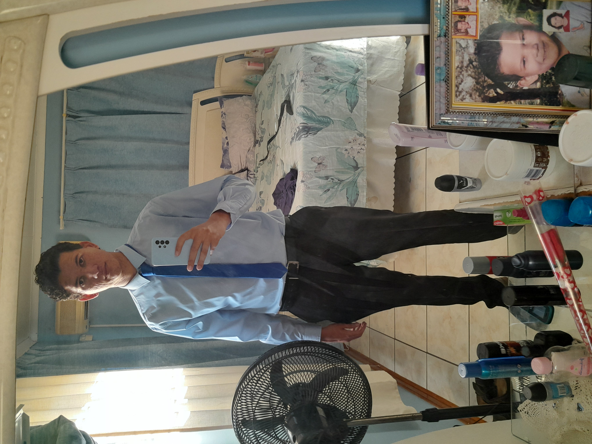
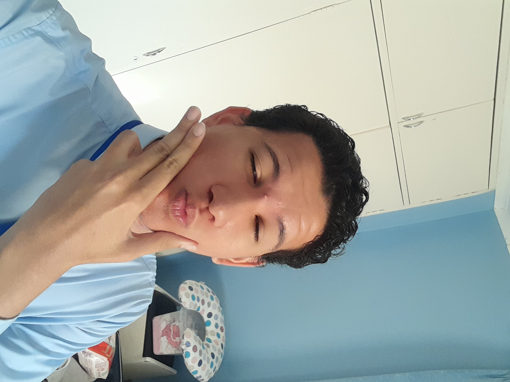

All About Kevin


Kevin is a 21-year-old Botswana Accountancy College student, currently in his first year pursuing Computer Systems Engineering. His passion for computers began at a young age, earning him the nickname "little minion" for his curiosity about technology.
As an ambivert, Kevin enjoys both social activities and quiet time for studying and gaming. He's known for his problem-solving skills, friendly nature, and dedication to his studies. His favorite food is pizza, and he believes that balance between work and play is essential for success.
Skills & Proficiency
| Skill | Level | Experience |
|---|---|---|
| HTML5 | Advanced | 1 year |
| CSS3 | Intermediate | 1 year |
| Python | Intermediate | 1 year |
| JavaScript | Beginner | 6 months |